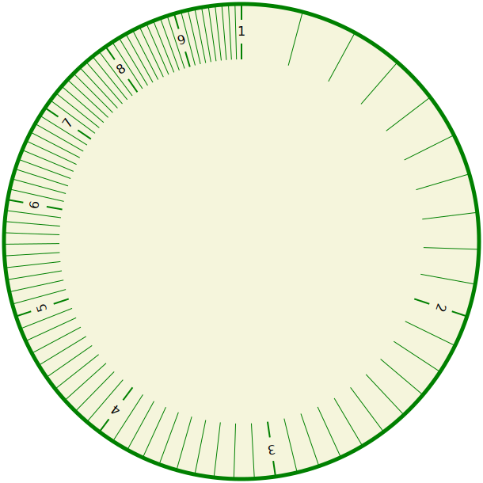
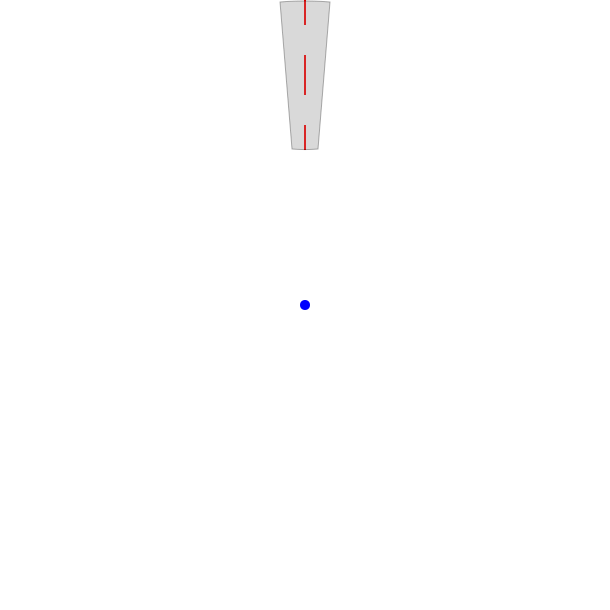
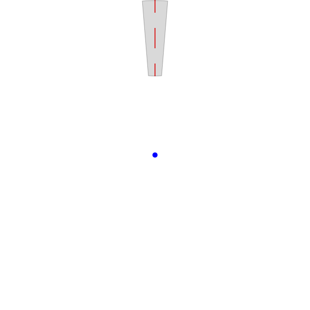
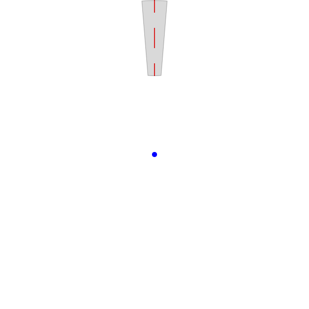

However, we don’t need to have 1 and 10 markers — instead we can wrap the rule around on itself so 1 and 10 (dropped) are in the same position, giving a circular structure. The object below does this. The inner section moves with suitable mouse/touch gestures. It is more difficult to arrange an easy readout in this format, so I have provided a table below with the relevant information, which I hope you can interpret with a bit of experimentation.
Wrapping up the rule

 

